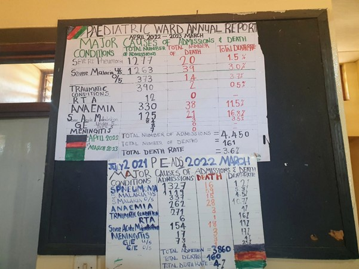

A new approach to Health Benefits Package design: an application of the Thanzi La Onse model in Malawi
Margherita Molaro et al. (PLOS Computational Biology article)
{kind=link}
How should limited resources be allocated to achieve the greatest possible return in health? All publicly funded healthcare systems face difficult decisions about how limited resources should be allocated to achieve the greatest possible return in health. These decisions are particularly pressing in lower-income countries (LICs) like Malawi, where resources are extremely limited and their inefficient allocation could result in larger morbidity and mortality.
An efficient allocation of limited resources in low-income settings offers the opportunity to improve population-health outcomes given the available health system capacity. Efforts to achieve this are often framed through the lens of health benefits packages (HBPs), which seek to establish which services the public healthcare system should include in its provision.
This study explores the effectiveness of different healthcare policies in improving health outcomes when resources are limited and uses a new analytical tool to inform such decisions based on an “all diseases, whole healthcare system” simulation specifically tailored to Malawi: the Thanzi La Onse (TLO) model. By modelling the incidence of disease, health-seeking behaviour, and the capacity of the healthcare system to meet the demand for care under realistic constraints on human resources for health available, we were able to simulate the health gains achievable under several plausible HBP strategies for Malawi.
Three of the proposed policies - LCOA (the current standard approach, linear constrained optimization analysis), CV (focussing on those clinically vulnerable), and VP (focussing on vertical programmes for HIV, tuberculosis and malaria and routine immunization) - showed greater overall health benefit compared to the NP (no policy) scenario where no prioritization is applied. Among these, the LCOA policy actually achieved the largest relative health gain - approximately 8% reduction in disability adjusted life years (DALYs) between 2023 and 2042 compared to the NP scenario—by concentrating resources on high-impact treatments.
On the other hand, the study also found that some policies did not perform well. For example, the reproductive, maternal, newborn, and child health policy (focussing on those services) led to an increase in DALYs, meaning it worsened health outcomes.
These findings demonstrate that the TLO simulation provides a unique tool with which to test HBPs designed specifically for Malawi and highlight the importance of carefully considering how healthcare services are prioritized, as not all approaches will lead to improved health outcomes.
Total DALYs incurred overall (between 2023 and 2042 inclusive) under each policy considered.